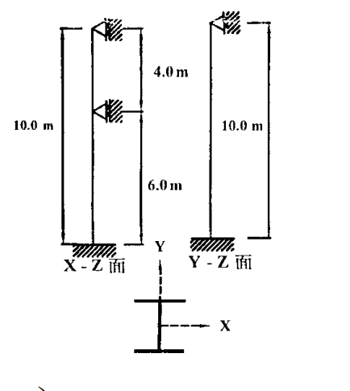
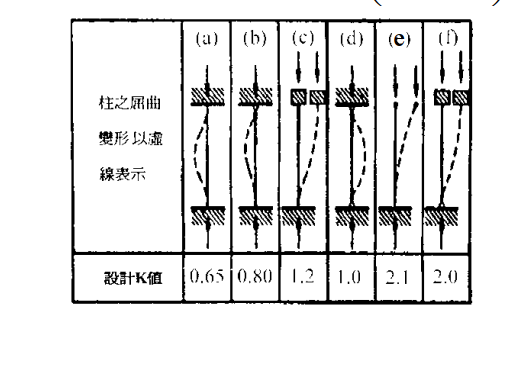
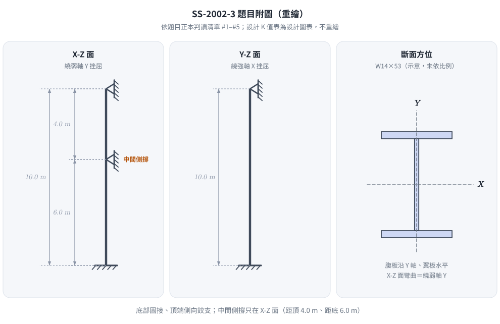
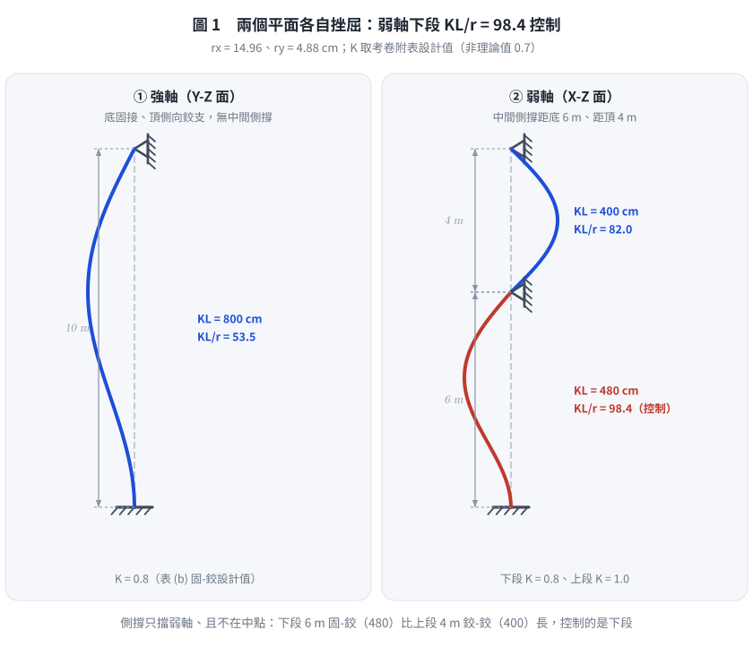
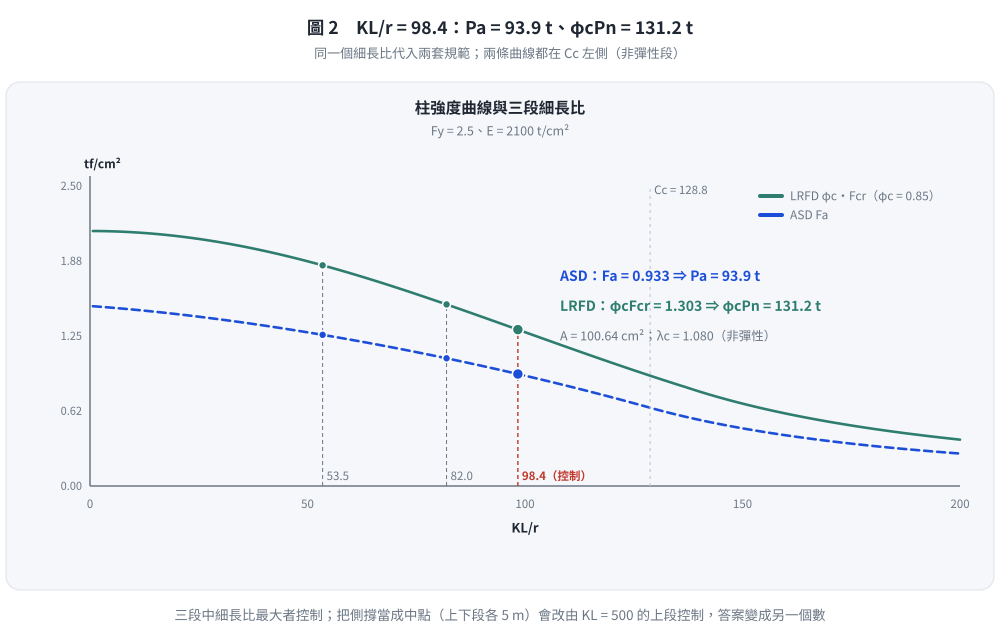

📄 題目正本：考卷原文・附圖・判讀清單（已確認）
SS-2002-3 題目正本
本檔只記錄考卷上寫了什麼、圖上畫了什麼，不含任何解法。解析見同資料夾
SS-2002-3.md。
判讀清單經使用者確認前，狀態為「待確認」；確認後本檔原則上不再修改（改動須回考卷原圖並記 log）。
| 項目 | 內容 |
|---|---|
| 考卷 | raw/exams/SS-2002_鋼結構設計.pdf 第 1（正面） 頁，第三題 |
| 考年 | 民國 91 年（2002） |
| 配分 | 25 分（㈠ 10、㈡ 15） |
| 附圖 | 2 張：柱立面 X-Z／Y-Z 面＋斷面 SS-2002-3-fig-2.png；設計 K 值表 SS-2002-3-fig-1.png |
| 判讀狀態 | 已確認（2026-11-02 使用者確認，含「不確定」項之解讀；轉錄同日，PyMuPDF 110 dpi 全頁＋關鍵處 400–500 dpi 局部目視，盲讀後才比對既有解析） |
1. 考卷原文（逐字）
三、有一受軸向載重之鋼柱長度為 10 m，柱子底部固接於基礎，頂端則為鉸接，中間垂直於弱軸有鉸接側向支撐（如附圖所示），採用 A36 鋼材斷面為 W14×53 型鋼，且為結實斷面。試回答以下問題：
㈠根據容許應力設計法，求該柱之容許載重（$P_a$）。（10 分）
㈡根據極限設計法，求該柱之設計載重（$P_u$）。（15 分）W14×53 斷面參數：$A = 100.64\ \text{cm}^2$，$r_x = 14.96$ cm，$r_y = 4.88$ cm
A36 鋼材：$F_y = 2.50\ \text{t/cm}^2$，$F_u = 4.10\ \text{t/cm}^2$，$E = 2.1\times10^3\ \text{t/cm}^2$
參考公式與圖表：
2. 考卷給的公式、附表與參數
題內「參考公式與圖表」照錄：
$$F_a = \frac{\left(1 - \dfrac{(KL/r)^2}{2C_c^2}\right)F_y}{\dfrac{5}{3} + \dfrac{3(KL/r)}{8C_c} - \dfrac{(KL/r)^3}{8C_c^3}}\qquad F_a = \frac{12}{23}\frac{\pi^2E}{(KL/r)^2}\qquad C_c = \sqrt{\frac{2\pi^2E}{F_y}}$$
$$F_{cr} = \left[\exp(-0.419\lambda_c^2)\right]F_y\qquad F_{cr} = \left(\frac{0.877}{\lambda_c^2}\right)F_y\qquad \lambda_c = \frac{KL}{r\pi}\sqrt{\frac{F_y}{E}}\qquad \phi = 0.85$$
- 公式未標適用範圍（$KL/r$ 與 $C_c$、$\lambda_c$ 與 1.5 的分界考卷沒寫）。
- 設計 K 值表（柱之屈曲變形以虛線表示）：(a) 0.65、(b) 0.80、(c) 1.2、(d) 1.0、(e) 2.1、(f) 2.0（各欄端部符號見 §3 附圖 2）。
- 考卷沒給 $F_u$ 以外的用途說明；$F_u$ 本題用不到。
3. 附圖

圖面文字照錄：10.0 m；4.0 m；6.0 m；X - Z 面；10.0 m；Y - Z 面；Y；X。

圖面文字照錄：柱之屈曲變形以虛線表示；設計K值 0.65、0.80、1.2、1.0、2.1、2.0。
4. 判讀清單
「把握」標不確定者請優先確認；解讀類項目（題目用字的意思）另標「解讀」。
| # | 項目 | 判讀 | 圖上／題文依據 | 把握 |
|---|---|---|---|---|
| 1 | 柱長 | 10 m（兩個面皆是） | 題文；兩面尺寸線皆 10.0 m | 確定 |
| 2 | 底部 | 固接 | 題文「底部固接」；兩面底部皆為地面斜線 | 確定 |
| 3 | 頂端 | 鉸接（有側向束制，不可平移） | 題文「頂端則為鉸接」；頂端三角形＋側邊斜線支承 | 確定 |
| 4 | 中間側撐位置 | 距頂 4.0 m、距底 6.0 m（只在 X-Z 面） | X-Z 面尺寸線：上段 4.0 m、下段 6.0 m（500 dpi） | 確定 |
| 5 | 側撐所在平面與軸 | X-Z 面＝柱在 X 方向側彎＝繞弱軸 Y 挫屈；Y-Z 面（繞強軸 X）無中間側撐 | 斷面圖：腹板沿 Y 軸、翼板水平；題文「垂直於弱軸有鉸接側向支撐」（解讀） | 確定 |
| 6 | K 值取用 | 考卷附「設計 K 值」表，作答應取表中設計值（固-鉸 0.80、鉸-鉸 1.0），而非理論值 | 附圖 2（解讀） | 不確定 → 使用者確認 |
| 7 | ㈡「設計載重 $P_u$」 | 設計強度 $\phi_cP_n$（$\phi = 0.85$），不是因數化外力 | 題文＋公式區給 $\phi$（解讀） | 不確定 → 使用者確認 |
| 8 | 公式適用範圍 | 考卷未標 $C_c$、$\lambda_c = 1.5$ 分界，依規範補 | 公式區（解讀） | 確定 |
轉錄：2026-11-02（SS-U1-1 題目正本推廣・批 1）｜確認：2026-11-02 使用者確認
修正日期：2026-11-03（頭表與 §3 的證據圖檔名對調更正：柱立面＋斷面為 fig-2.png、設計 K 值表為 fig-1.png；已回證據圖逐張目視確認。考卷原文、§2 與判讀清單內容不變。使用者同意）
考題編號：SS-2002-3
主分類： SS-U1-1 拉力及壓力桿件
副分類：（無）
設計法： 混合（ASD + LRFD）
標籤： 壓力桿件 有效長度 K值 端部條件 中間側向支撐 弱軸挫屈 強軸挫屈 ASD LRFD Cc Fa λc Fcr φcPn 非彈性挫屈 側撐位置判讀
1. 題目（考卷原文見題目正本）
考卷原文、公式／附表、附圖與判讀清單（已確認）見
SS-2002-3-problem.md。本節只列解題時最容易讀錯的地方與本解使用的記號；題意以題目正本為準。

圖 1 題目附圖重繪（依題目正本判讀清單 #1–#5；設計 K 值表為設計圖表，不重繪）。兩個面並排，中間側撐只出現在 X-Z 面且位置標為距頂 4.0 m、距底 6.0 m，攔下把側撐放到強軸方向或上下段長度顛倒的誤讀。
常見誤讀
| 項目 | 正確判讀 | 常見誤讀 |
|---|---|---|
| 中間側撐位置 | 距頂 4.0 m、距底 6.0 m，只在 X-Z 面 | 當成中點 5 m（舊版解析即如此，上段 KL 500 cm 控制） |
| 側撐對應的軸 | X-Z 面＝柱沿 X 側彎＝繞弱軸 Y；Y-Z 面（強軸）全長 10 m 無側撐 | 把 X-Z 面當成強軸平面 |
| K 值 | 取考卷附表設計值：固-鉸 0.80、鉸-鉸 1.0 | 用理論值 0.7 |
| ㈡「設計載重 $P_u$」 | 設計強度 $\phi_cP_n$（$\phi = 0.85$） | 以為要另做載重組合 |
本解記號： W14×53：$A = 100.64$ cm²、$r_x = 14.96$、$r_y = 4.88$ cm；$F_y = 2.5$、$E = 2100$ t/cm²；$KL$：強軸 800、弱軸下段 480、弱軸上段 400 cm。
2. 考題核心精神與出題者意圖 (Core Concepts & Examiner's Intent)
核心觀念： 壓力柱要分別檢查強軸與弱軸的有效細長比，取大者控制。中間側撐只對它所約束的那個方向有效；被側撐分開的兩段長度不同、端部條件也不同，要逐段算。
出題者意圖：
1. 能從兩個平面的立面圖讀出各方向的支承與側撐位置。
2. 從設計 K 表正確查值（固-鉸 0.80、鉸-鉸 1.0）。
3. 同一柱分別以 ASD 與 LRFD 計算。
3. 解題戰略地圖與陷阱分析 (Strategic Roadmap & Trap Analysis)
解題順序：
$$\text{讀圖：哪個面有側撐、在哪裡} \to \text{逐段 }K \to KL/r\text{（強軸、弱軸上段、弱軸下段）} \to \text{取最大} \to \text{ASD: }F_a,\,P_a \to \text{LRFD: }\lambda_c,\,F_{cr},\,\phi_c P_n$$
關鍵陷阱：
- 側撐不在中點：X-Z 面立面圖標的是「上 4.0 m、下 6.0 m」。下段較長且是固-鉸（$K = 0.80$），$KL = 480$ cm；上段 4 m 鉸-鉸，$KL = 400$ cm。下段控制。若誤當成中點（各 5 m），會得到上段 $KL = 500$ cm 控制，偏保守約 4%。
- 分清兩個面對應哪一軸：X-Z 面內的變形是沿 $X$ 方向側移，彎曲軸是 $Y$（弱軸）。題文「中間垂直於弱軸有鉸接側向支撐」與此一致。
- K 用設計值：題目附的是設計 K 表，固-鉸取 0.80，不是理論值 0.70。
3.5 變數層次分析（Variable Hierarchy Analysis）
複習提示：解題後，在每個卡住的知識點「卡關?」欄標記
⚠；第二次複習時只看有⚠的項目。
最終目標： 判斷強弱軸端部條件 → 查取 $K$ → 比較 $KL/r$（弱軸下段控制）→ ASD：$\boxed{P_a}$；LRFD：$\boxed{\phi_c P_n}$
主要公式（$\boxed{\phantom{x}}$ = 未知，待推導）
$$\frac{K_xL}{r_x} = \frac{0.8 \times 1000}{14.96} = 53.5, \quad \frac{K_yL_{下}}{r_y} = \frac{0.8 \times 600}{4.88} = \boxed{98.4}\text{（控制）}, \quad \frac{K_yL_{上}}{r_y} = \frac{1.0 \times 400}{4.88} = 82.0$$
ASD：
$$C_c = \sqrt{\frac{2\pi^2 E}{F_y}} = 128.8, \quad KL/r < C_c \Rightarrow \boxed{F_a} \Rightarrow \boxed{P_a} = F_a A$$
LRFD：
$$\lambda_c = \frac{KL}{r\pi}\sqrt{\frac{F_y}{E}} = \boxed{1.080} < 1.5 \Rightarrow F_{cr} = e^{-0.419\lambda_c^2}F_y \Rightarrow \boxed{\phi_c P_n} = 0.85 F_{cr} A$$
L1：題目直接給定
| 符號 | 數值 | 說明 |
|---|---|---|
| $L$ | 10 m | 柱全長 |
| $A$ | 100.64 cm² | W14×53 |
| $r_x$、$r_y$ | 14.96、4.88 cm | |
| $F_y$、$E$ | 2.50、2100 t/cm² | A36 |
| 底端／頂端 | 固接／鉸接 | 兩個面皆同 |
| 弱軸側撐 | X-Z 面，距底 6.0 m、距頂 4.0 m | 依原圖標註 |
L2：需知識點推導
Step 1：K 值
| 符號 | 公式 / 來源 | 卡關? |
|---|---|---|
| $K_x$ | Y-Z 面全長 10 m，固-鉸 → 0.80，$KL = 800$ cm | |
| $K_{y,下}$ | X-Z 面下段 6 m，固-鉸（側撐點）→ 0.80，$KL = 480$ cm | ⚠ |
| $K_{y,上}$ | X-Z 面上段 4 m，鉸-鉸 → 1.0，$KL = 400$ cm |
Step 2：細長比
| 符號 | 公式 / 來源 | 卡關? |
|---|---|---|
| $(KL/r)_x$ | $800/14.96 = 53.5$ | |
| $(KL/r)_{y,下}$ | $480/4.88 = 98.4$（控制） | |
| $(KL/r)_{y,上}$ | $400/4.88 = 82.0$ |
Step 3(a)：ASD
| 符號 | 公式 / 來源 | 卡關? |
|---|---|---|
| $C_c$ | $128.8$ | |
| $F.S.$ | $5/3 + 3(98.4)/(8 \times 128.8) - 98.4^3/(8 \times 128.8^3) = 1.897$ | |
| $F_a$ | $[1 - 98.4^2/(2 \times 128.8^2)] \times 2.5 / 1.897 = 0.933$ t/cm² | |
| $P_a$ | $0.933 \times 100.64 = 93.9$ t |
Step 3(b)：LRFD
| 符號 | 公式 / 來源 | 卡關? |
|---|---|---|
| $\lambda_c$ | $(98.4/\pi)\sqrt{2.5/2100} = 1.080$ | |
| $F_{cr}$ | $e^{-0.419 \times 1.080^2} \times 2.5 = 1.533$ t/cm² | |
| $\phi_c P_n$ | $0.85 \times 1.533 \times 100.64 = 131.2$ t |
L3：深層知識（不懂就卡住）
| 知識點 | 說明 | 卡關? |
|---|---|---|
| 立面圖與彎曲軸 | 在 X-Z 面內側移＝繞 $Y$ 軸彎曲；先把「面」換成「軸」再配 $r$ | |
| 側撐分段 | 側撐點視為鉸（可轉不可移），兩段各自判斷端部條件與長度 | |
| ASD $C_c$ | Euler 應力 $= F_y/2$ 時的細長比 | |
| 設計 K 值 | 含固接端的理論值往上調（0.5→0.65、0.7→0.80、2.0→2.1） |
4. 步驟化詳細計算過程 (Step-by-Step Detailed Calculation)
步驟 1：判斷各方向端部條件並查取 K 值
強軸（繞 $X$ 軸彎曲，Y-Z 面）： 全長 10 m，底固接、頂鉸接，無中間側撐 → 表 (b)：
$$K_x = 0.80,\qquad K_xL = 0.80 \times 1000 = 800\ \text{cm}$$
弱軸（繞 $Y$ 軸彎曲，X-Z 面）： 側撐位於距底 6.0 m、距頂 4.0 m，分兩段。
| 段 | 長度 | 下端 | 上端 | 表 | $K$ | $KL$ |
|---|---|---|---|---|---|---|
| 下段 | 600 cm | 固接（基礎） | 鉸（側撐） | (b) | 0.80 | 480 cm |
| 上段 | 400 cm | 鉸（側撐） | 鉸（柱頂） | (d) | 1.0 | 400 cm |
弱軸取較大者：$K_yL = 480$ cm（下段控制）。
步驟 2：細長比
$$\frac{K_xL}{r_x} = \frac{800}{14.96} = 53.5,\qquad \frac{K_yL_{下}}{r_y} = \frac{480}{4.88} = 98.4,\qquad \frac{K_yL_{上}}{r_y} = \frac{400}{4.88} = 82.0$$
$$\boxed{\frac{KL}{r} = 98.4\quad\text{（弱軸下段控制）}}$$

圖 1 兩個平面各自挫屈：側撐只擋弱軸，且不在中點，下段 6 m 固-鉸的 $KL/r = 98.4$ 控制。這張圖攔的是把側撐也算給強軸、把側撐當成中點，或下段 K 取理論值 0.7。
步驟 3（一）ASD — 容許載重 $P_a$
$$C_c = \sqrt{\frac{2\pi^2 \times 2100}{2.5}} = 128.8 > 98.4 \Rightarrow \text{非彈性挫屈}$$
| 項目 | 計算 | 數值 |
|---|---|---|
| $(KL/r)^2/(2C_c^2)$ | $9{,}675/33{,}162$ | $0.2918$ |
| 分子 | $(1 - 0.2918) \times 2.5$ | $1.771$ t/cm² |
| $3(KL/r)/(8C_c)$ | $3 \times 98.4/(8 \times 128.8)$ | $0.2864$ |
| $(KL/r)^3/(8C_c^3)$ | $951{,}600/(8 \times 2{,}135{,}000)$ | $0.0557$ |
| 分母 F.S. | $1.6667 + 0.2864 - 0.0557$ | $1.897$ |
$$F_a = \frac{1.771}{1.897} = 0.933\ \text{t/cm}^2$$
$$\boxed{P_a = 0.933 \times 100.64 = 93.9\ \text{t}}$$
步驟 3（二）LRFD — 設計載重 $\phi_cP_n$
$$\lambda_c = \frac{98.4}{\pi}\sqrt{\frac{2.5}{2100}} = 31.31 \times 0.03450 = 1.080 < 1.5\ \Rightarrow\ \text{非彈性}$$
$$F_{cr} = \exp(-0.419 \times 1.080^2) \times 2.5 = \exp(-0.4890) \times 2.5 = 0.6133 \times 2.5 = 1.533\ \text{t/cm}^2$$
$$P_n = 1.533 \times 100.64 = 154.3\ \text{t}$$
$$\boxed{P_u \le \phi_c P_n = 0.85 \times 154.3 = 131.2\ \text{t}}$$

圖 2 同一個控制細長比 $98.4$ 代入兩套規範：$P_a = 93.9$ t、$\phi_cP_n = 131.2$ t，都在 $C_c$ 左側的非彈性段。這張圖攔的是取錯控制段，或誤用彈性挫屈公式。
計算結果總覽
| 方向 | 端部條件 | K | KL (cm) | r (cm) | KL/r |
|---|---|---|---|---|---|
| 強軸（Y-Z 面） | 固-鉸，10 m | 0.80 | 800 | 14.96 | 53.5 |
| 弱軸下段（X-Z 面） | 固-鉸，6 m | 0.80 | 480 | 4.88 | 98.4（控制） |
| 弱軸上段（X-Z 面） | 鉸-鉸，4 m | 1.0 | 400 | 4.88 | 82.0 |
| 設計法 | 結果 |
|---|---|
| ASD | $P_a = \mathbf{93.9\ t}$ |
| LRFD | $\phi_cP_n = \mathbf{131.2\ t}$ |
雙路徑驗算： 以 $\lambda_c$ 與 $C_c$ 的關係 $\lambda_c = \sqrt2\,(KL/r)/C_c = \sqrt2 \times 98.4/128.8 = 1.080$ ✔；三段逐一代入 ASD 公式，$P_a$ 分別為 126.8（強軸）、93.9（弱軸下段）、107.1（弱軸上段）t，最小者 93.9 t 與上相同 ✔。
5. 關鍵爭議點與進階探討 (Critical Issues & Advanced Discussion)
讀錯側撐位置會怎樣
| 判讀 | 控制段 | KL/r | $P_a$ | $\phi_cP_n$ |
|---|---|---|---|---|
| 原圖：距底 6 m（本解） | 下段 固-鉸 | 98.4 | 93.9 t | 131.2 t |
| 誤作中點（舊版解析） | 上段 鉸-鉸 5 m | 102.5 | 90.4 t | 125.8 t |
誤判偏保守 4%，但控制段整個換了位置；若換成「距底 4 m」反而會變成上段 6 m 鉸-鉸控制（KL/r = 123），差距就大了。立面圖上的尺寸線一定要讀。
為何用 0.80 不用 0.70
考卷附的是設計 K 值表。基礎與側撐的實際轉動約束都不完全，含固接端的理論值要往上調。
ASD 與 LRFD 結果比較
$$\frac{\phi_cP_n}{P_a} = \frac{131.2}{93.9} = 1.40$$
ASD 的 $P_a$ 對應工作載重，LRFD 的 $\phi_cP_n$ 對應因數化載重；活載重比例中等時，因數化載重約為工作載重的 1.4 倍，兩者相當。
分段的近似性
把側撐點當成鉸、兩段各自查 K，忽略了上下兩段彼此的轉動約束（上段較短，會對下段頂端提供一些轉動約束）。這是考場與設計常用的保守簡化。
6. 依最新規範（AISC 360-16／-22）對照
| 項目 | 考卷（ASD 1989／LRFD 1993 系） | AISC 360-16／-22 |
|---|---|---|
| 柱強度式 | $F_{cr} = 0.658^{\lambda_c^2}F_y$ 的指數形式 $e^{-0.419\lambda_c^2}F_y$；$\lambda_c > 1.5$ 用 $0.877F_y/\lambda_c^2$ | 以 $F_y/F_e \le 2.25$ 分界（等同 $\lambda_c \le 1.5$），$F_{cr} = 0.658^{F_y/F_e}F_y$ |
| $\phi_c$ | 0.85 | 0.90 |
| 本題 $\phi_cP_n$ | 131.2 t | $0.90 \times 154.3 = 138.9$ t |
| ASD | $F_a$ 拋物線、F.S. 1.67～1.92 | $P_n/\Omega_c$，$\Omega_c = 1.67$：$154.3/1.67 = 92.4$ t |
觀察： 新版 ASD 以 LRFD 同一條曲線除以固定 $\Omega_c = 1.67$，本題得 92.4 t，與舊 ASD 的 93.9 t 很接近；LRFD 則因 $\phi_c$ 由 0.85 提高到 0.90 而增加約 6%。台灣現行 99 年版鋼構規範 LRFD 仍採 $\phi_c = 0.85$。
修正日期：2026-11-01（依考卷原圖：X-Z 面側撐位於距底 6.0 m、距頂 4.0 m，原解誤作中點 5 m，且誤把 X-Z 面標為強軸平面；更正為弱軸下段固-鉸控制，$KL/r$ 102.5 → 98.4，$P_a$ 90.4 → 93.9 t、$\phi_cP_n$ 125.8 → 131.2 t；新增雙路徑驗算與 §6 對照）
圖解補繪：2026-11-03（向量圖 2 張，腳本 gen_SS-2002-3.py，改輸入可原地重跑；SVG 供 wiki／PDF，2× PNG 供 pptx／影片）
驗證狀態：unverified
修正日期：2026-11-02（§1 全文重述改為指向題目正本 SS-2002-3-problem.md（已確認）＋常見誤讀＋本解記號，避免題意兩份不同步；解題內容與答案不變）
修正日期：2026-11-03（§1 補入題目附圖重繪 figs/SS-2002-3-fig-1-problem.svg（依已確認的題目正本判讀清單，腳本 gen_SS-2002-3.py，可重跑）；解題內容與答案不變）